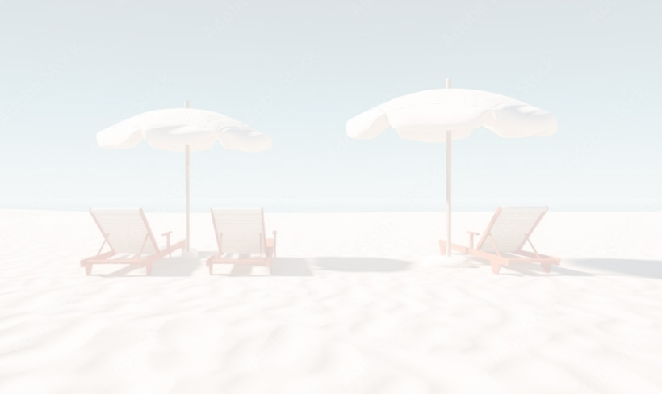

미디어쿼리 연습 56번 현민
(반응형 웹 사이트 : Responsive web Design)
데스크탑 : 1024px(1200px) 이상
태블릿 : 768px(992px) ~ 데스크탑
모바일 : 768px 이하(576px)
이곳은 반응형 웹 사이트를 위한 화면입니다.
주제
강사
장소
웹 표준에 대하여
홍길동
그린아카데미
Java 프로그래밍
김영민
그린 402호
